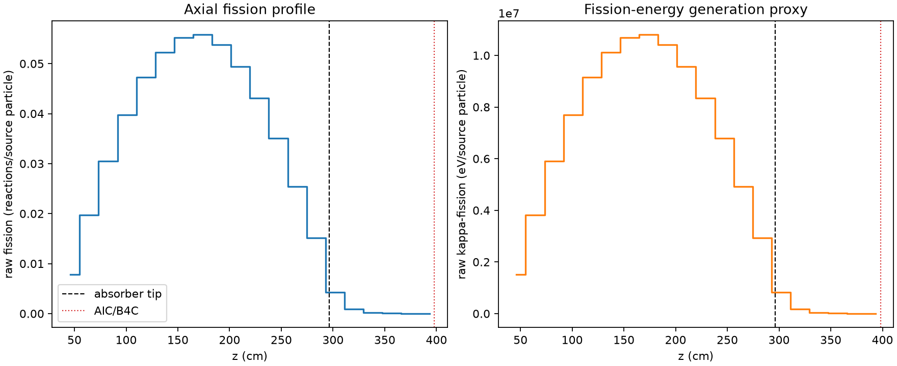
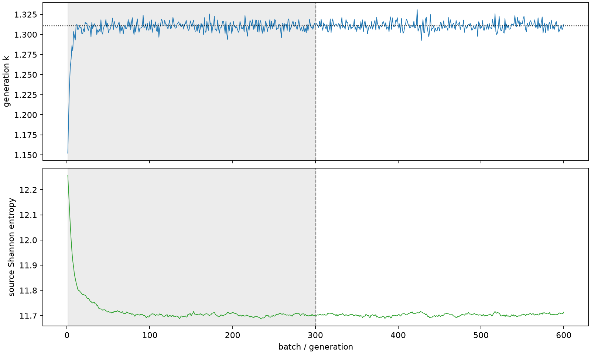

| field | value |
|---|---|
| experiment | V2-STAGE_256_OGRENCI_01-0011 |
| k | 1.310848377839519 |
| MC standard error | 0.00018224817996009954 |
| seconds | 989.2139105440001 |
| acceptance | not_assessed |
| convergence | review_required |
Completed is output integrity only; physical and statistical review required. Zero tallies do not prove zero production or zero uncertainty.
| diagnostic | value |
|---|---|
| geometric fuel voxels | 5280 |
| zero fission tally voxels | 0 |
| low signal fuel voxels | 755 |
| low signal fission share | 0.00010489066289467949 |
| low signal kappa share | 0.00010492477273807771 |
| important fission share | 0.9500461647242435 |
| previous filter included | 4525 |
| duration estimate s | 1562.5173488400023 |
| actual minus estimate s | -573.3034382960022 |
| fission relative MC error | statistics |
|---|---|
| all_geometric_fuel | {"voxels": 5280, "positive_mean_voxels": 5280, "zero_mean_voxels": 0, "undefined_relative_error_voxels": 0, "median": 0.01040514627646224, "p95": 0.5135906723503852, "maximum": 1.0000000000000002} |
| low_signal | {"voxels": 755, "positive_mean_voxels": 755, "zero_mean_voxels": 0, "undefined_relative_error_voxels": 0, "median": 0.4150658050651943, "p95": 0.8844958484560603, "maximum": 1.0000000000000002} |
| important_95pct | {"voxels": 3194, "positive_mean_voxels": 3194, "zero_mean_voxels": 0, "undefined_relative_error_voxels": 0, "median": 0.008264138034288528, "p95": 0.012276675819467855, "maximum": 0.014925492314794113} |
| outside_previous_filter | {"voxels": 755, "positive_mean_voxels": 755, "zero_mean_voxels": 0, "undefined_relative_error_voxels": 0, "median": 0.4150658050651943, "p95": 0.8844958484560603, "maximum": 1.0000000000000002} |
| kappa_fission relative MC error | statistics |
|---|---|
| all_geometric_fuel | {"voxels": 5280, "positive_mean_voxels": 5280, "zero_mean_voxels": 0, "undefined_relative_error_voxels": 0, "median": 0.010394547363528957, "p95": 0.5147200702035013, "maximum": 1.0} |
| low_signal | {"voxels": 755, "positive_mean_voxels": 755, "zero_mean_voxels": 0, "undefined_relative_error_voxels": 0, "median": 0.4147388358621197, "p95": 0.8840817013172702, "maximum": 1.0} |
| important_95pct | {"voxels": 3194, "positive_mean_voxels": 3194, "zero_mean_voxels": 0, "undefined_relative_error_voxels": 0, "median": 0.008255275674767595, "p95": 0.0122627062299173, "maximum": 0.01490953493093876} |
| outside_previous_filter | {"voxels": 755, "positive_mean_voxels": 755, "zero_mean_voxels": 0, "undefined_relative_error_voxels": 0, "median": 0.4147388358621197, "p95": 0.8840817013172702, "maximum": 1.0} |
| axial bin | fission share | kappa-fission share |
|---|---|---|
| 1 | 0.01460833155622396 | 0.014608914565805417 |
| 2 | 0.0367976807101024 | 0.03679758061491305 |
| 3 | 0.05687253026721718 | 0.056872443073833205 |
| 4 | 0.07426821561629812 | 0.07426780199687676 |
| 5 | 0.08822465247988515 | 0.0882241977751672 |
| 6 | 0.09760870147733765 | 0.09760870325633805 |
| 7 | 0.10300620660731195 | 0.10300595824598989 |
| 8 | 0.10415960908640572 | 0.10415929362151621 |
| 9 | 0.10049111034101299 | 0.10049066249802284 |
| 10 | 0.09219506177674815 | 0.09219482705192486 |
| 11 | 0.08051827206541225 | 0.08051806062235026 |
| 12 | 0.06542431139010217 | 0.06542406499183478 |
| 13 | 0.04754146969507524 | 0.04754132485789452 |
| 14 | 0.028278597402533738 | 0.028278498580723493 |
| 15 | 0.00789192709170326 | 0.007893590953700817 |
| 16 | 0.0016211077865115827 | 0.0016216922173798425 |
| 17 | 0.0003748388408974634 | 0.00037496968791301616 |
| 18 | 9.029019263507412e-05 | 9.031998469336304e-05 |
| 19 | 2.2746448123324596e-05 | 2.275474400695016e-05 |
| 20 | 4.339168462713115e-06 | 4.340659115360786e-06 |
Histories include the inactive-to-active transition at batch 300. kappa-fission approximates fission energy production, not total heat deposition.

